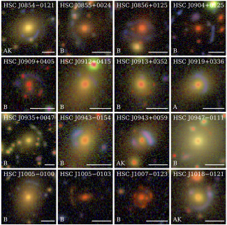

Introduction
My research concentrate on structure formation, mass distribution, high redshift object in order to study galaxy evolution using gravitational lensing as main tool to study those topics. The gravitational lensing effect itself is not limited to small scales (e.g strong lensing in the inner region of groups or clusters). At large radii the tidal field causes a subtle change in the shapes of galaxies, resulting in a coherent alignment of the sources that can be measured statistically. This signal is proportional to the mass of the system and this study is called weak gravitational lensing. However, this requires very high quality data, which has so far limited the size of these surveys.

Group-to-cluster scale lens
High redshift galaxy groups is important laboratories for studies of structure formation and galaxy evolution itself, since gravitationally bound groups contain up to 70% of the galaxies in the universe. Over 25% of lenses are expected to lie in group, however, the group mass scale (1013 − 1014M⊙) is relatively unexplored and we still do not have a consistent scenario for the mass distribution in group- scale halos.
Learn more

High-z galaxies
HSC J0904-0102, is a quadruply-lensed LBG at z = 3.403. In comparison with other LBGs (both lensed and unlensed) from the literature, the HSC J0904–0102 source turns out to be unusually compact and smaller than other LBGs (both lensed and unlensed) from the literatures. Along with J1152+0047, another unusually compact lensed source from the HSC Sur-vey, the discovery of HSC J0904–0102 hints at the possibility thatwe are beginning to unearth a source population that could not bestudied before.
Learn more